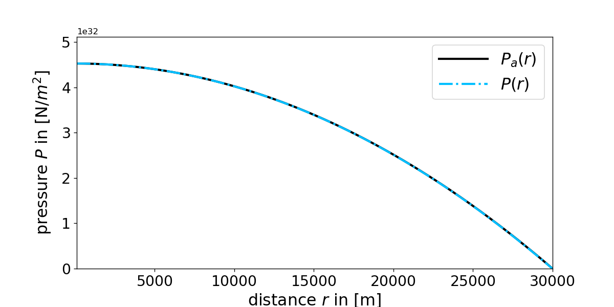
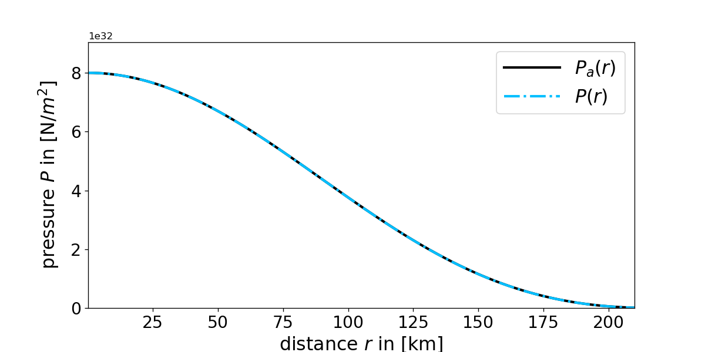
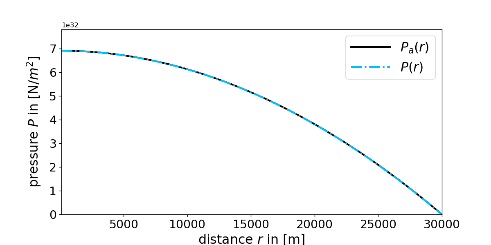

1D Runge Kutta Method
The Runge Kutta algorithm is a method to solve initial value problems that are specified more precisely as follows:
$$\dfrac{d}{dt}u(t)=F(t,u(t)),\:\:\:\:\:\:\:\:\:\:\:u(t_0)=u_0$$
One reason why the Runge Kutta algorithm is so famous is that the accuracy of the algorithm is increasing with higher orders.
The second order Runge Kutta method is given by:
$$k_1=dt f(t_n,u_n),\:\:\:\:\:\:\:\:\:\:\:k_2=dt f(t_n+\frac{1}{2}dt,u_n+\frac{1}{2}k_1),\:\:\:\:\:\:\:\:\:\:\:u_{n+1}=u_n+k_2$$
The coefficients of the third order are:
$$k_1=dt f(t_n,u_n),\:\:\:\:\:\:\:\:k_2=dt f(t_n+\frac{1}{2}dt,u_n+\frac{1}{2}k_1),\:\:\:\:\:\:\:\:k_3=dt f(t_n+dt,u_n-k_1+2k_2)$$
The next iteration step is:
$$u_{n+1}=u_n+\frac{1}{6}k_1+\frac{2}{3}k_2+\frac{1}{6}k_3$$
The fourth order Runge Kutta methods coefficients are:
$$k_1=dt f(t_n,u_n),\:\:\:\:\:k_2=dt f(t_n+\frac{1}{2}dt,u_n+\frac{1}{2}k_1),\:\:\:\:\:k_3=dt f(t_n+\frac{1}{2}dt,u_n+\frac{1}{2}k_2),\:\:\:\:\:k_4=dt f(t_n+dt,u_n+k_3)$$
The next iteration step of the fourth order is:
$$u_{n+1}=u_n+\frac{1}{6}k_1+\frac{1}{3}k_2+\frac{1}{3}k_3+\frac{1}{6}k_4$$
In the following we are going to discuss some 1 dimensional examples for the Runge Kutta algorithm although it should be mentioned that this method can also be used for vector valued functions \(u \Rightarrow \vec{u}\) and \(F \Rightarrow \vec{F}\).
\(\:\)
One example of differential equation is: $$\dfrac{d}{dt}u(t)=-(t-a)u(t),\:\:\:\:\:\:\:\:\:\:\:u(0)=C$$ Its analytical solution is: $$u_a(t)=Ce^{-\frac{1}{2}(t-2a)t}$$ The figure below compares this solution with the one obtained from the Runge Kutta algorithm:

Figure 1: Comparison of the analytical solution \(u_a(t)\) and numerical solution \(u_i(t)\) obtained from the i-th order Runge Kutta method. Notice however that one has set \(t_0=0\:\), \(t_{final}=10\:\), \(dt=0.12\:\), \(C=10^{-7}\:\) and \(a=6\:\).
"""
The code below was written by @author: https://github.com/DianaNtz and is an
implementation of the second, third and fourth order Runge Kutta algorithm.
It solves the differential equation u'=-(t-a)u. For details on requirements
and licences see https://github.com/DianaNtz/Runge-Kutta-Method-Example.
"""
import numpy as np
import matplotlib.pyplot as plt
#some initial values
t0=0
tfinal=10
dt=0.12
steps=int((tfinal-t0)/dt)
u0=0.0000001
a=6
#differential equation function f
def f(t,u):
return -(t-a)*u
t=np.empty(steps+1, dtype='double')
tn=t0
u2=np.empty(steps+1, dtype='double')
un2=u0
u3=np.empty(steps+1, dtype='double')
un3=u0
u4=np.empty(steps+1, dtype='double')
un4=u0
for i in range(0,steps+1):
t[i]=tn
#Runge Kutta second
u2[i]=un2
k1=dt*f(tn,un2)
k2=dt*f(tn+0.5*dt,un2+0.5*k1)
un2=un2+k2
#Runge Kutta third
u3[i]=un3
k1=dt*f(tn,un3)
k2=dt*f(tn+0.5*dt,un3+0.5*k1)
k3=dt*f(tn+dt,un3-k1+2*k2)
un3=un3+k2*(4/6)+k1*(1/6)+k3*(1/6)
#Runge Kutta fourth
u4[i]=un4
k1=dt*f(tn,un4)
k2=dt*f(tn+0.5*dt,un4+0.5*k1)
k3=dt*f(tn+0.5*dt,un4+0.5*k2)
k4=dt*f(tn+dt,un4+k3)
un4=un4+k2*(2/6)+k1*(1/6)+k3*(2/6)+k4*(1/6)
tn=tn+dt
#analytical solution
ua=u0*np.exp(-0.5*(t-a*2)*t)
#plotting analytical vs numerical solutions
ax1 = plt.subplots(1, sharex=True, figsize=(10,5))
plt.plot(t,ua,color='black',linestyle='-',linewidth=3,label="$u_a(t)$")
plt.plot(t,u2,color='yellow',linestyle='-.',linewidth=3,label="$u_2(t)$")
plt.plot(t,u3,color='lime',linestyle='-.',linewidth=3,label = "$u_3(t)$")
plt.plot(t,u4,color='deepskyblue',linestyle='-.',linewidth=3,label = "$u_4(t)$")
plt.xlabel("t",fontsize=19)
plt.ylabel(r' ',fontsize=19,labelpad=20).set_rotation(0)
plt.ylim([0,8])
plt.xlim([t0,tfinal])
plt.xticks(fontsize= 17)
plt.yticks(fontsize= 17)
plt.legend(loc=2,fontsize=19,handlelength=3)
plt.savefig("RungeKutta.png",dpi=120)
plt.show()Hallo

Figure 2: Shows the time evolution of the probability density for the initial coherent state \(\psi_\alpha(z,0)\) and compares
its analytical solution \(\psi_\alpha(z,t)\) to the numerical calculated result from the above described Crank Nicolson
method \(\psi (z,t)\). Notice however that one has set \(m=m_e\), \(\omega_z=110\cdot 2\pi\) kHz and \(\alpha=2.5\).
"""
The code below was written by @author: https://github.com/DianaNtz and is a fourth
order Runge Kutta implementation. It calculates in particular the pressure radius
relation of a spherical symmetric Newtonian star with constant density and compares
it with its analytical solution. For details on requirements and licences see
https://github.com/DianaNtz/Runge-Kutta-Method-Pressure-In-Stars/tree/Newton.
"""
import numpy as np
import matplotlib.pyplot as plt
dr=100 #in m
R=30000 #stars radius in m
Rfinal=R
r0=dr
steps=int(-(r0-Rfinal)/dr)
rho0=6*10**16 #central density of the star in kg/m^3
G=6.67259*10**-11 #gravitational constant in m^3/(kg s^2)
P0=4*np.pi/3*rho0*R**3*G/(2*R)*rho0 #central pressure
def rho(r,rho0,P):
if(r < =R):
rho=rho0
else:
rho=0
return rho
def Mass(r,rho0,Parr):
n=int((r-r0)/dr)
rint=np.linspace(r0,r,n)
M=0
for i in range(0,n):
M=4*np.pi*rint[i]**2*rho(rint[i],rho0,Parr[i])*dr+M
return M
def f(r,P,Parr):
Newton=-G*Mass(r,rho0,Parr)/r**2*rho(r,rho0,P)
return Newton
P=np.empty(steps+1, dtype='double')
r=np.empty(steps+1, dtype='double')
Pn=P0
rn=r0
#Runge Kutta fourth
for i in range(0,steps+1):
r[i]=rn
P[i]=Pn
k1=dr*f(rn,Pn,P)
k2=dr*f(rn+0.5*dr,Pn+0.5*k1,P)
k3=dr*f(rn+0.5*dr,Pn+0.5*k2,P)
k4=dr*f(rn+dr,Pn+k3,P)
rn=rn+dr
Pn=Pn+k2*(2/6)+k1*(1/6)+k3*(2/6)+k4*(1/6)
#analytical solution for constant density star
Pa= 4*np.pi/3*rho0*R**3*G/(2*R)*rho0*(1-(r/R)**2)
ax1 = plt.subplots(1, sharex=True, figsize=(10,5))
plt.plot(r,Pa,color='black',linestyle='-',linewidth=2.5,label = "$P_a(r)$ ")
plt.plot(r,P,color='deepskyblue',linestyle='-.',linewidth=2.5,label="$P(r)$ ")
plt.xlabel("distance $r$ in [m]",fontsize=19)
plt.ylabel(r'pressure $P$ in [N/$m^2$]',fontsize=19,labelpad=10)
plt.xlim([r0,Rfinal])
plt.ylim([0,P0+P0*0.13])
plt.xticks(fontsize= 17)
plt.yticks(fontsize= 17)
plt.legend(loc=1,fontsize=19,handlelength=3)
plt.savefig("Newton.png",dpi=120)
plt.show()
hallo

Figure 2: Shows the time evolution of the probability density for the initial coherent state \(\psi_\alpha(z,0)\) and compares
its analytical solution \(\psi_\alpha(z,t)\) to the numerical calculated result from the above described Crank Nicolson
method \(\psi (z,t)\). Notice however that one has set \(m=m_e\), \(\omega_z=110\cdot 2\pi\) kHz and \(\alpha=2.5\).
"""
The code below was written by @author: https://github.com/DianaNtz and is a fourth order
Runge Kutta implementation. It solves in particular the equation of hydrostatic
equilibrium for a spherical symmetric star with polytropic equation of state and compares
it with the analytical solution for polytropic index n=1. For details on requirements and
licences see https://github.com/DianaNtz/Runge-Kutta-Method-Pressure-In-Stars/tree/Lane.
"""
import numpy as np
import matplotlib.pyplot as plt
dr=100 #in m
R=210000 #in m
Rfinal=R
r0=dr
steps=int(-(r0-Rfinal)/dr)
rho0=2*10**16 #central density of the star in kg/m^3
G=6.67259*10**-11 #gravitational constant in m^3/(kg s^2)
n=1 #dimensionless
k=2 #m^5/kg/s^2 for n=1
P0=k*rho0**(1+1/n) #central pressure
def rho(r,rho0,P):
return ((1/k)*P)**(n/(n+1))
def Mass(r,rho0,Parr):
n=int((r-r0)/dr)
rint=np.linspace(r0,r,n)
M=0
for i in range(0,n):
M=4*np.pi*rint[i]**2*rho(rint[i],rho0,Parr[i])*dr+M
return M
def f(r,P,Parr):
Lane=-G/r**2*Mass(r,rho0,Parr)*rho(r, rho0, P)
return Lane
P=np.empty(steps+1, dtype='double')
r=np.empty(steps+1, dtype='double')
Pn=P0
rn=r0
#Runge Kutta fourth
for i in range(0,steps+1):
r[i]=rn
P[i]=Pn
k1=dr*f(rn,Pn,P)
k2=dr*f(rn+0.5*dr,Pn+0.5*k1,P)
k3=dr*f(rn+0.5*dr,Pn+0.5*k2,P)
k4=dr*f(rn+dr,Pn+k3,P)
rn=rn+dr
Pn=Pn+k2*(2/6)+k1*(1/6)+k3*(2/6)+k4*(1/6)
#analytical solution of the Lane Emden equation for n=1
gamma=1/n+1
zeta=np.sqrt(4*np.pi*G*(gamma-1)/(k*gamma))*r*rho0**((2-gamma)/2)
theta=np.sin(zeta)/zeta
rhoa=theta**n*rho0
Pa=k*rhoa**gamma
ax1 = plt.subplots(1, sharex=True, figsize=(10,5))
plt.plot(r/1000,Pa,color='black',linestyle='-',linewidth=2.5,label = "$P_a(r)$ ")
plt.plot(r/1000,P,color='deepskyblue',linestyle='-.',linewidth=2.5,label="$P(r)$ ")
plt.xlabel("distance $r$ in [km]",fontsize=19)
plt.ylabel(r'pressure $P$ in [N/$m^2$]',fontsize=19,labelpad=10)
plt.xlim([r0/1000,Rfinal/1000])
plt.ylim([0,P0+P0*0.13])
plt.xticks(fontsize= 17)
plt.yticks(fontsize= 17)
plt.legend(loc=1,fontsize=19,handlelength=3)
plt.savefig("Lane.png",dpi=120)
plt.show()
hallo

Figure 2: Shows the time evolution of the probability density for the initial coherent state \(\psi_\alpha(z,0)\) and compares
its analytical solution \(\psi_\alpha(z,t)\) to the numerical calculated result from the above described Crank Nicolson
method \(\psi (z,t)\). Notice however that one has set \(m=m_e\), \(\omega_z=110\cdot 2\pi\) kHz and \(\alpha=2.5\).
"""
The code below was written by @author: https://github.com/DianaNtz and is a fourth
order Runge Kutta implementation. It solves in particular the Tolman Oppenheimer
Volkoff equation (TOV) for a spherical symmetric star with constant density and
compares it with its analytical solution. For details on requirements and licences
see https://github.com/DianaNtz/Runge-Kutta-Method-Pressure-In-Stars/tree/TOV.
"""
import numpy as np
import matplotlib.pyplot as plt
dr=100 #in m
R=30000 #star radius in m
Rfinal=R
r0=dr
steps=int(-(r0-Rfinal)/dr)
c=299792458 #speed of light in m/s
rho0=6*10**16 #central density of the star in kg/m^3
G=6.67259*10**-11 #gravitational constant in m^3/(kg s^2)
rs=2*G/c**2*(4*np.pi/3*rho0*R**3) #schwarzschild radius
P0=rho0*c**2*(1-np.sqrt(1-rs/R))/(3*np.sqrt(1-rs/R)-1) #central pressure
def rho(r,rho0,P):
if(r < =R):
rho=rho0
else:
rho=0
return rho
def Mass(r,rho0,Parr):
n=int((r-r0)/dr)
rint=np.linspace(r0,r,n)
M=0
for i in range(0,n):
M=4*np.pi*rint[i]**2*rho(rint[i],rho0,Parr[i])*dr+M
return M
def f(r,P,Parr):
TOV=-G*(Mass(r,rho0,Parr)+4*np.pi*r**3*P/c**2)/(r**2*(1-2*G*Mass(r,rho0,Parr)
/(r*c**2)))*(rho(r,rho0,P)+P/c**2)
return TOV
P=np.empty(steps+1, dtype='double')
r=np.empty(steps+1, dtype='double')
Pn=P0
rn=r0
#Runge Kutta fourth
for i in range(0,steps+1):
r[i]=rn
P[i]=Pn
k1=dr*f(rn,Pn,P)
k2=dr*f(rn+0.5*dr,Pn+0.5*k1,P)
k3=dr*f(rn+0.5*dr,Pn+0.5*k2,P)
k4=dr*f(rn+dr,Pn+k3,P)
rn=rn+dr
Pn=Pn+k2*(2/6)+k1*(1/6)+k3*(2/6)+k4*(1/6)
#analytical solution for constant density star
Pa=rho0*c**2*(np.sqrt(1-r**2*rs/R**3)-np.sqrt(1-rs/R))
/(3*np.sqrt(1-rs/R)-np.sqrt(1-r**2*rs/R**3))
ax1 = plt.subplots(1, sharex=True, figsize=(10,5))
plt.plot(r,Pa,color='black',linestyle='-',linewidth=2.5,label = "$P_a(r)$ ")
plt.plot(r,P,color='deepskyblue',linestyle='-.',linewidth=2.5,label="$P(r)$ ")
plt.xlabel("distance $r$ in [m]",fontsize=19)
plt.ylabel(r'pressure $P$ in [N/$m^2$]',fontsize=19,labelpad=10)
plt.xlim([r0,Rfinal])
plt.ylim([0,P0+P0*0.13])
plt.xticks(fontsize= 17)
plt.yticks(fontsize= 17)
plt.legend(loc=1,fontsize=19,handlelength=3)
plt.savefig("TOV.png",dpi=120)
plt.show()